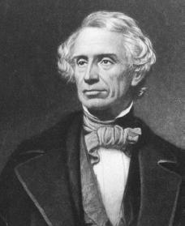

Samuel Morse was an inventor and painter. In 1844, Samuel Morse invented the telegraph, which took him 12 years to do so. It was the first device that used electricity to send messages. It was first first used for radio transmission, then to send messages.
